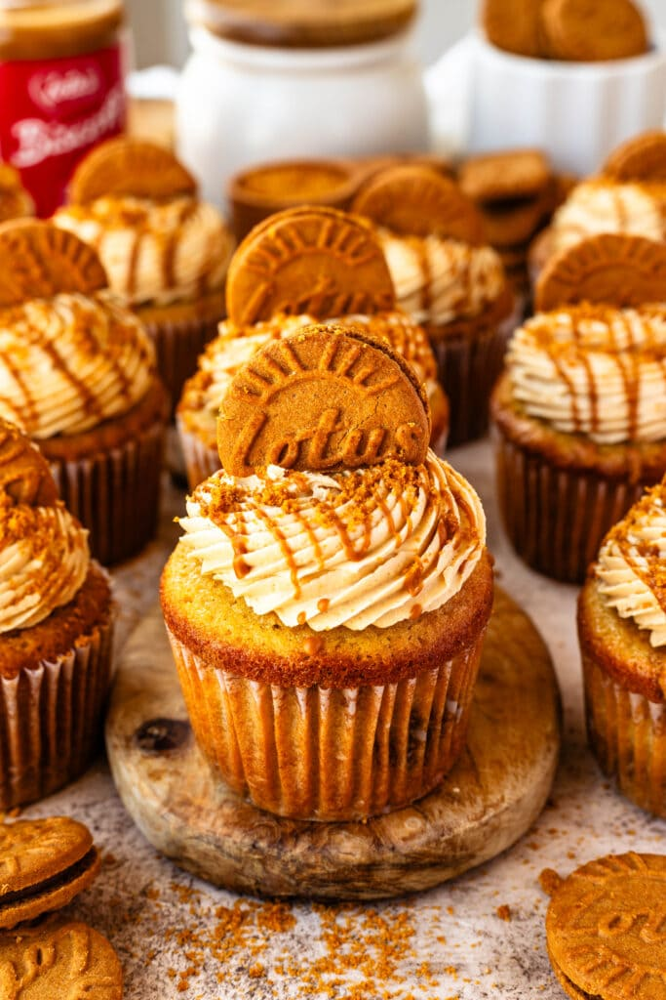

Biscoff Cupcakes

These Biscoff Cupcakes have a delicious Biscoff Crumb baked into the batter, they are filled with Biscoff Cookie Butter, topped with Biscoff Buttercream Frosting.
Ingredients:
Biscoff Crumb
- 100 gr (12 cookies)
- 50 gr brown sugar
- 56 gr unsalted butter, melted
- 1 teaspoon cinnamon
Cupcake Batter
- 191 gr all-purpose flour
- 1 teaspoon baking powder
- 1/4 teaspoon baking soda
- 1/4 teaspoon fine sea salt
- 113 gr unsalted butter, softened
- 55 gr brown sugar (half the amount of source recipe)
- 50 gr white granulated sugar (half the amount of source recipe)
- 3 large eggs, room temperature
- 1 teaspoon vanilla extract
- 120 ml milk, room temperature
Biscoff Buttercream Frosting
- 170 gr unsalted butter, softened
- 3 tablespoons cream cheese, softened
- 100 gr biscoff cookie butter
- 450 gr powdered sugar
- 2 teaspoons vanilla extract
- 1/4 teaspoon salt
- 60 ml/4 tablespoons heavy cream
Decoration
- 100 gr cookie butter
- 3 tablespoons biscoff cookie butter
- 8 biscoff cookies(halfed)
- 3-4 cookies, crumbs
Steps for Biscoff Crumb:
- Obtain the crumbs by processing the cookies in a food processor. You can also put them in a ziplock bag, and smash the biscuits with a rolling pin.
- In a bowl, mix the biscoff crumbs, brown sugar, melted butter, and cinnamon. Stir to combine. Set aside.
Steps for Cupcake Batter:
- Pre-heat the oven to 180 Celsius ("Ober-/Unterhitze"), and line 14 (12) cupcake tins with cupcake liners.
- Next, sift or whisk the flour, baking powder, baking soda, and salt together in a bowl. Set aside.
- In the bowl of an electric mixer, using the paddle attachment, beat the butter at medium speed, for about 1 minute.
- Add the granulated sugar, and brown sugar, and beat for another 1 to 2 minutes, until creamy and fluffy. Scrape the sides of the bowl as necessary.
- Add the eggs, one at a time, mixing each egg until combined before adding the next.
- Add the vanilla extract and stir to combine.
- Add half of the milk and mix.
- Now add half of the flour mixture to the bowl and mix to combine.
- Pour the rest of the milk in and stir.
- Finally, add the last bit of flour and mix to incorporate. I like to finish mixing with a spatula instead of the mixer, in order to not over-mix the flour with the batter which could result in dry and tough cupcakes later.
Assemble the cupcakes!
- Place about 1 tablespoon of the Biscoff Crumb on the bottom of each cupcake cavity.
- Pour about 1.5 tbsp of batter on top of the crumb. Spoon another tablespoon of biscoff biscuit crumb on top. Top with another 1 to 1.5 tbsp of batter, until the cupcake cavity is 2/3 of the way full.
- Pour another couple of teaspoons of crumb on top of the batter.
- Use a toothpick to gently swirl the batter.
- Bake for about 18 minutes. Start checking if the cupcakes are baked at the 15 minute mark, and keep baking and checking as necessary.
- To see if the cupcakes are ready, gently press with your finger on top of the cupcakes, and if they spring right back, that means they are done baking.
- Let the cupcakes cool down before filling and frosting.
Biscoff Buttercream Frosting
- To make the Biscoff Buttercream Frosting, beat the butter and cream cheese for 2 minutes. Add the cookie butter, beat for another minute.
- Add the powdered sugar, salt, vanilla, and heavy cream to the bowl.
- Mix on low to combine.
- Raise the speed to medium-high and beat for another 2 minutes. If necessary, add more heavy cream or milk. If the frosting is too soft, add more powdered sugar.
- Place the frosting in a piping bag fitted with the piping tip of your choice. I used a 4B.
To Decorate
- Use an apple corer (Sparschäler!), or a spoon to remove the center of each cupcake.
- Spoon or pipe the Lotus Biscoff Spread in the center. It’s much easier and less messy to pipe the cookie butter.
- Pipe the frosting on top of the cupcakes.
- Melt 3 tablespoons of speculoos cookie butter in the microwave, microwave for 5 second intervals. Drizzle the butter over the frosted cupcakes. You can use a spoon or, again a piping bag with the end snipped.
- Place half of a cookie on top of the cupcakes and sprinkle them with the Biscoff cookie crumbs.
Notes:
- Ingredient temperature: When making the cupcake batter, use room temperature ingredients. The butter, the eggs, and the milk should be sitting out for a bit before you start.
- Batter: Do not over mix the batter once you add the dry ingredients in. That can cause the cupcakes to become dense.
- Baking: Bake the cupcakes until they are just done. Over baking can cause the cupcakes to become dry.
- When making the frosting, make sure the butter and cream cheese are at room temperature (72ºF). If they are too cold, the frosting will be lumpy or grainy. And if they are too warm, the frosting will be soupy.